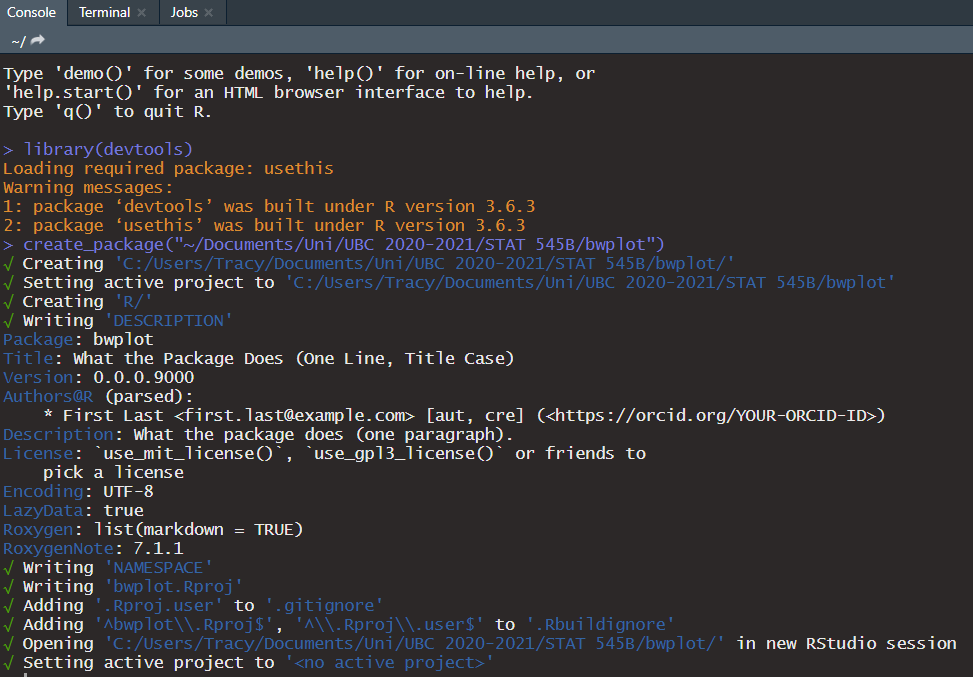
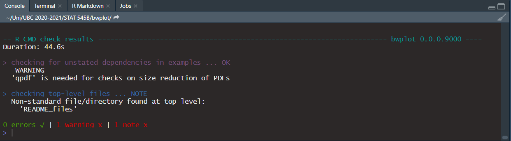
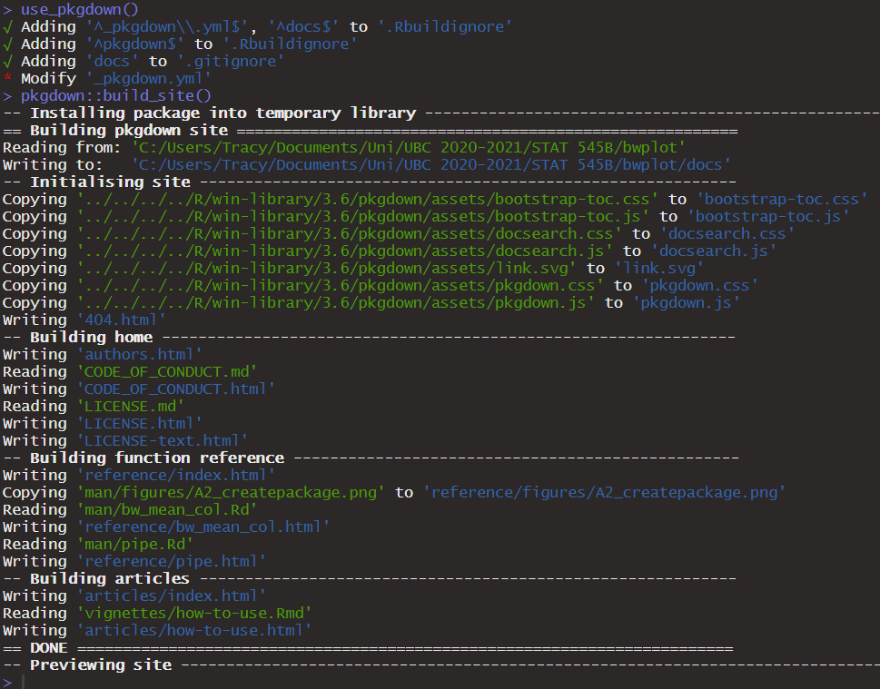

The goal of bwplot is to generate plots with an aesthetically cleaner theme than the ggplot default. It is handy for quickly producing numerous plots that share the same general template and vary only in plot variables. By presetting certain theme elements in the bwplot functions, the need to repeat code for each individual plot is reduced.
bwplot uses the theme_bw() theme by default and removes gridlines and legends whenever appropriate. A generic colour scheme is also created. Axis labels, colour palettes, etc. can be edited using additional ggplot2 functions after initially generating the plot.
This package is currently under construction as part of UBC’s STAT 545B course for the Winter 2020 semester.
Installation
You can install the development version from GitHub with:
devtools::install_github("t-wang-ecohydro/bwplot")Example
Here is a basic example comparing the a bwplot function to the equivalent ggplot2 alternative:
# ggplot2:
mtcars %>%
group_by(cyl) %>%
summarise(mean = mean(mpg, na.rm=TRUE)) %>%
ggplot() + geom_col(aes(as.factor(cyl), mean, fill = as.factor(cyl))) +
xlab("cyl") + ylab("mpg") +
theme_bw() + theme(panel.grid.major = element_blank(),
panel.grid.minor = element_blank(),
legend.position = "none") +
ggtitle("Mean mpg per cyl")
# bwplot:
bw_mean_col(mtcars, mpg, cyl, na.rm=TRUE)
Available functions
Current plotting functions are:
-
bw_mean_col: produces ageom_col()plot with the following defaults:
- Background:
theme_bw() - Gridlines: none
- Legend: none
- Fill: unique color per column
- Axis labels: default data table column names
- (to be completed in later assignments?)
How it was made (this part is for Assignment 2)
Creating the package
The first step is to create the package. This was done usingcreate_package(), as shown in the screenshot below:

bwplot is the name of my package. An R folder for functions, NAMESPACE file and DESCRIPTION file were automatically generated.
Next, I set up version control using use_git(), and made my first commit. On GitHub, I created a repository called “bwplot” and synced my new R package to it via the Git terminal.
$ git remote add origin https://github.com/t-wang-ecohydro/bwplotHaving finished the initial setup, I added my function from Assignment 1 to the package.
Creating a function
I generated the .R file using:
use_r("bw_mean_col")This created bw_mean_col.R and the also prompted me to create a matching test file. (I got tired of taking screenshots by this point, sorry!) I took my function from Assignment 1 and pasted it into the new file.
Roxygen comments
In RStudio, I navigated to my function and used “Insert Roxygen Skeleton” to generate a Roxygen comment section. Then I filled in the title, parameters, and additional information about my function. I used @export to indicate that this function is meant to be public (it’s the main feature of my package after all), and added package dependencies using @import (see the next section). For this part of my package creation, I edited my R file manually.
I called document() to save my changes. Now when I use ?bw_mean_col I can see a basic description of what my function does.
License
I generated a LICENSE file and LICENSE.md using use_mit_license(copyright_holder = "Tracy Wang"). I went with the MIT license because it seemed like a good general license… this is just a toy package after all, I’m not particularly concerned about people grabbing it to use or modify.
Package dependencies
My function has some dependencies on other R packages. To add these dependencies, I typed into the console:
use_package("dplyr")
use_package("ggplot2")
use_package("palmerpenguins")This updated the DESCRIPTION file to include these dependencies. When I used document(), the NAMESPACE file was automatically updated as well. In the Roxygen comment section of my function, I added my package dependencies:
#' @import dplyr
#' @import ggplot2For the %>% piping function, I tried the following:
use_pipe()But when I ran check(), I got an error stating that the dependency on the magrittr package was not needed, so I ended up doing it the other way by using use_package("magrittr") and then editing the Roxygen comment.
#' @importFrom magrittr "%>%"Finally, I went through my function and changed all functions with package dependencies into “package::function()” format. For example, ggsave() became ggplot2::ggsave(), and select() became dplyr::select().
Updating the description
I added my name and email manually under the “Author” field and changed the license. For the title, I experimented with editing the file via the console:
use_description(fields = list(Title = "Make Aesthetically Tidy Plots"))Tests
I generated a testthat folder and a testthat.R file using the command:
use_testthat()Then I generated test-bw_mean_col.R using use_test("bw_mean_col"). I pasted my tests from Assignment 1 into the file. Because I had assigned some variables last time in order to test my function, I decided to change some of the tests to check for plot layer parameters, such as labels, mapping and data, rather than directly comparing whole plot objects to each other.
Because some of my tests use the penguins dataset from palmerpenguins, I had added it as a package dependency (but I didn’t need to @import it explicitly in order to use it, just refer to the dataset as palmerpenguins::penguins).
Checks
Throughout the package creation process, I was constantly running check() to make sure that everything was working! Here’s the last section of what my most recent check looked like.

Readme and vignette
The last step of my assignment was to create a readme file and vignette via the console:
use_readme_rmd()
use_vignette("how-to-use")This generated a README.Rmd file (the readme) and a how-to-use.Rmd file (the vignette). I edited the content of both these files manually on RStudio.
Optionals:
Badges: These were copied from other repositories where I could find relevant ones.
Code of conduct: I generated the file using use_code_of_conduct().
News: This was created using use_news_md(). After making the file, I added a line about my package’s release.
Package website: I used the following commands in the console:
use_pkgdown()
pkgdown::build_site()And lo and behold! My package now has all the materials for a website in the docs folder.
Using GitHub Pages, I set the folder as the source and I got a URL for my package website:
